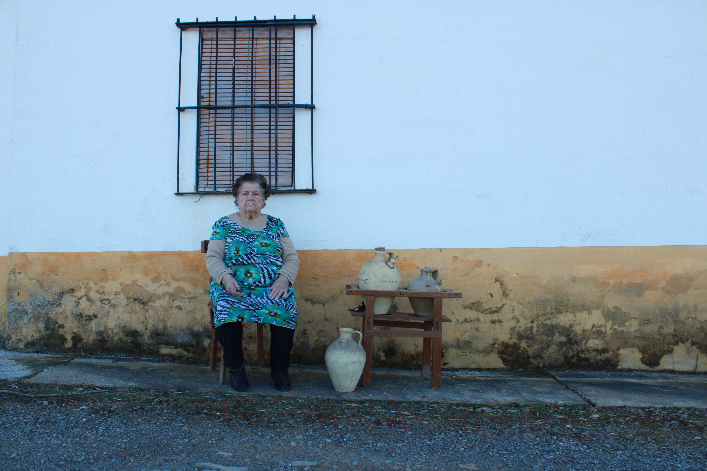
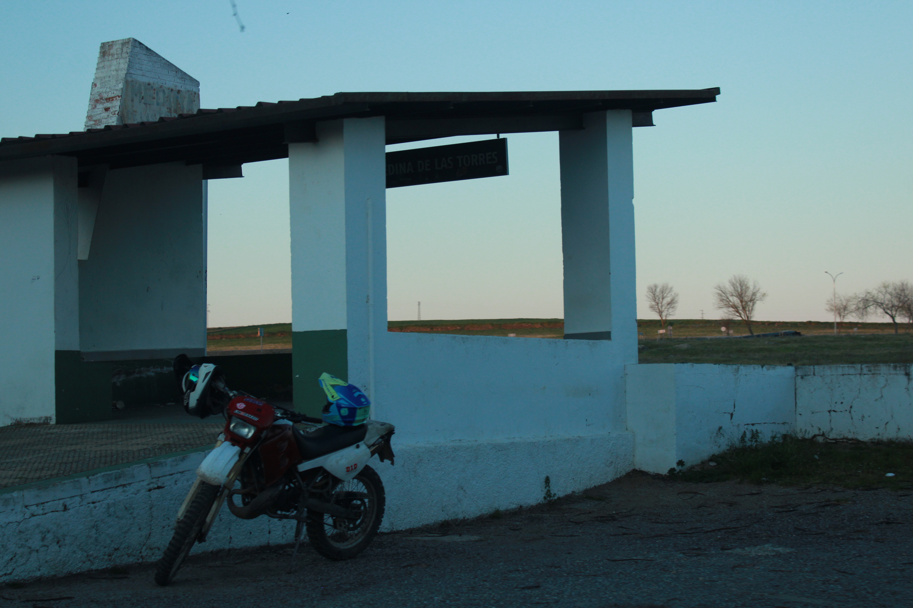
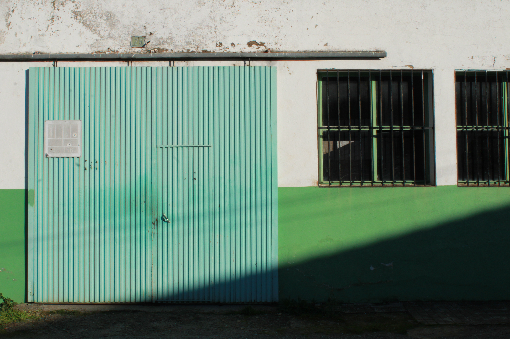
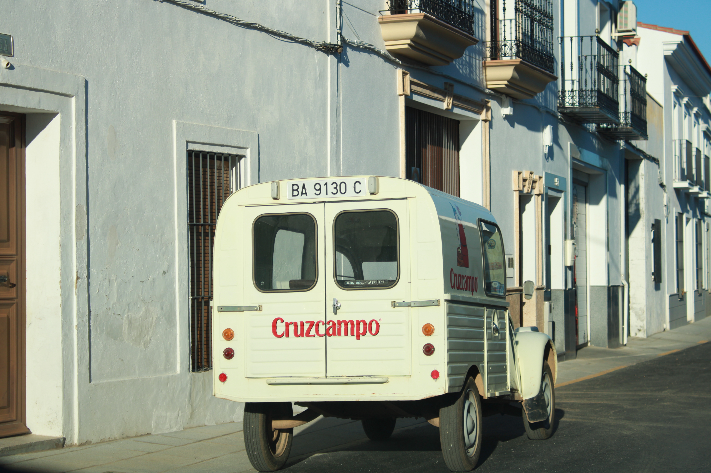

FOTOGRAFÍA
Esta serie fotográfica fue realizada para un proyecto universitario centrado en la vida rural. A través de las imágenes, se reflexiona sobre la despoblación, el abandono del campo y la belleza silenciosa de lo que permanece.





